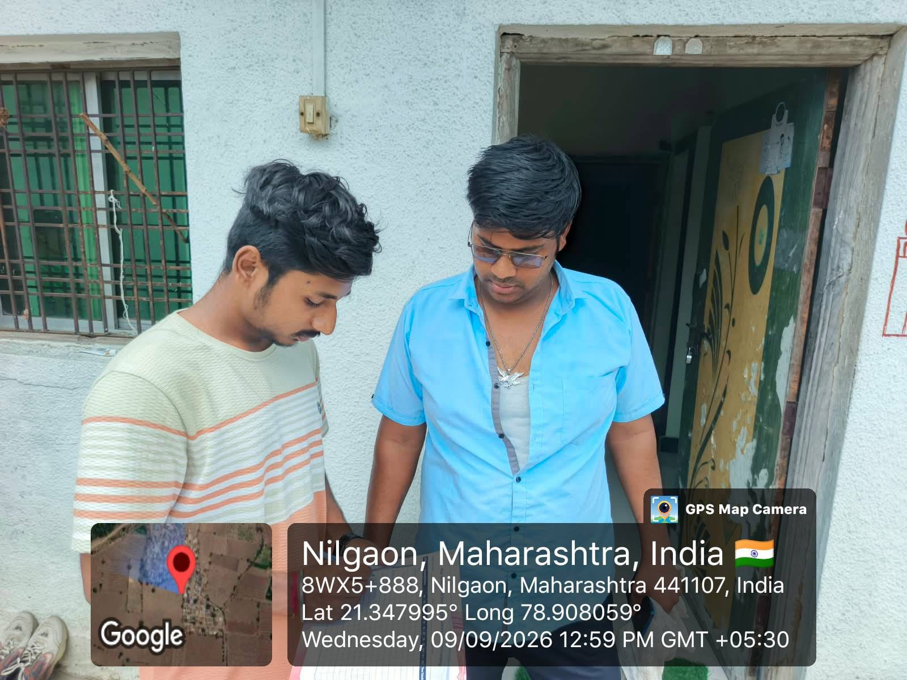

Baseline Survey Overview
26 households · Sheet 01 & 02Ground-level data collected on device access, digital payment habits, and awareness of cyber fraud, alongside each household's willingness to join a digital literacy programme.
Digital payment adoption
Share of surveyed households making digital payments
Cyber-fraud awareness
Share aware of common online fraud tactics
Family size distribution
Number of households by family size (baseline, n=26)
Village Demographics
Pilot respondents by ageAge profile of pilot respondents and how digital literacy awareness varies across generations.
Age bracket distribution
Share of respondents in each age group
Awareness by age group
Average affirmative response rate by bracket
Research Methodology
Structured field processPilot survey conducted
17 households were interviewed with an initial 12-question matrix to test clarity and local relevance.
Questionnaire refined
Based on pilot feedback, wording was simplified and response options were finalised for the full baseline round.
Full baseline survey
26 households across Nilgaon were surveyed to capture device access, payment behaviour and fraud awareness.
Data compiled and analysed
Responses were cleaned, coded and visualised to identify priority training topics and project impact.
Pilot Survey — Question Breakdown
17 respondents · 12-question matrixAffirmative response rate for each question, calculated against respondents who answered (blank entries excluded). Click any bar to see the exact response breakdown. Average completion time was 5–7 minutes per household.
Baseline vs Pilot Comparison
26 baseline · 17 pilotSide-by-side view of comparable indicators from both survey rounds.
Awareness Impact Calculator
Interactive projectionDrag the slider to set the share of households you plan to train. The model assumes each trained household closes about 60% of its remaining awareness gap.
Where Awareness Is Lowest
Priority questionsThese five questions returned the lowest affirmative rate in the pilot round and set the agenda for the awareness sessions.
Key Findings
Devices and payments are already in most homes
Mobile ownership and digital payment use are both high across surveyed households — the infrastructure for awareness work is already in place.
Fraud awareness is the clearest gap
Only about a third of households recognise common cyber-fraud tactics, well behind adoption of the payment tools that put them at risk.
Security habits lag basic phone use
Questions on OTP handling, phishing recognition, and safe practices (Q3, Q5, Q6, Q7, Q10) scored lowest in the pilot round.
The village is ready to participate
Over 90% of households expressed willingness to join a digital literacy programme — engagement is not the barrier, access to training is.
Recommended Focus for Awareness Sessions
- Lead with OTP and phishing safetyThe single widest gap between usage and awareness — teach it before anything else.
- Use hands-on UPI demonstrationsHouseholds already own the devices; a live walkthrough will land faster than a lecture.
- Run sessions in small, local groupsHigh readiness scores suggest turnout won't be the issue — keep groups small enough for questions.
- Repeat the assessment after trainingRe-survey a sample of the same households to measure the change in awareness.
Survey Locations
Approximate geotagsThe map shows approximate locations where surveys were conducted in and around Nilgaon village. Exact GPS coordinates were not recorded for all households.
Field Documentation
Respondent proof galleryField documentation including signed consent sheets, survey record sheets, and geotagged photos collected during the campaign.



Full Pilot Respondent Data
17 respondents · 12 questionsSearch by respondent name and expand the table to view every recorded answer. Y = Yes, N = No, B = Blank.
| Respondent | Age | Q1 | Q2 | Q3 | Q4 | Q5 | Q6 | Q7 | Q8 | Q9 | Q10 | Q11 | Q12 |
|---|